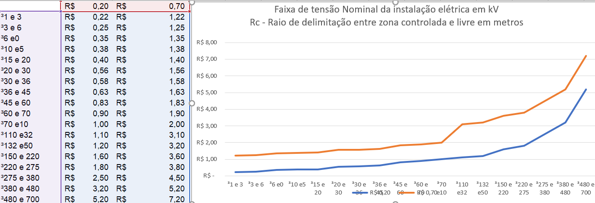

<!DOCTYPE hmtl>
<hmtl lang="pt-br">
<head>
    
    <meta charset="UFT-8">
    <meta name="viewport" content="width=device-width, inicial-scale=1.0">
    <link rel="stylesheet" href="style.css">
    
    <title> Norma regulamentadora 10</title>
</head>
<body>
   
  <div class="plano-fundo">
      <div class="topo">
          
          <div class="barradepesquisa"></div>
          <label for="search-inut"></label>
          <input class="buscar-barra" type="text" placeholder="Buscar">
          <button class="botao">OK</button>
      </div>
      <div class="chamada">
            <h1>NR 10 - SEGURANÇA EM INSTALAÇÕES E SERVIÇOS EM ELETRICIDADE</h1>
      </div>
    <div class="title" >
          <a href="https://www.guiatrabalhista.com.br/guia/clientes/login.php">ACESSE O GUIA TRABALHISTA |</a>
          <a href="https://www.guiatrabalhista.com.br/obras.htm"> OBRAS ELETRONICAS ATUALIADAS | </a>
          <a href="https://www.portaltributario.com.br/downloads/"> DOWNLOADS |</a>
          <a href="https://www.guiatrabalhista.com.br/tematicas.php"> TEMÁTICAS |</a>
          <a href="https://www.guiatrabalhista.com.br/boletim/boletimtrabalhista.htm"> BOLETIM TRABALHISTA |</a>
          <a href="https://www.portaltributario.net.br/"> ATENDIMENTO |</a>
      </div>
  </div><!--End-plano-fundo-->
    

    


      <p><center><a href="https://www.guiatra\balhista.com.br/legislacao/portariamte598.htm">Texto dado pela Portaria MTE n.º 598, de 07 de dezembro de 2004</center></a>
     

      <h2 class="h2">Publicação <center>D.O.U</center></h2>
      <p>Portaria Mtb n.° 3.214, de 08 de junho de 1978 <CEnter>06/07/78</CEnter> </p>


      <h3 class="h3">Alterações/Atualizações <center>D.O.U</center></h3>
      <div>SSMT n° 12, de 06 de junho de 1983 <center>14/06/83</center> </div>
      <div>Portaria MTE n.º 598, de 07 de dezembro de 2004 <center>08/09/04</center></div>
      <div>Portaria MTPS n° 508, de 29 de abril de 2016 <center>02/05/16</center></div>
      <div>Portaria SEPRT n.º 915, de 30 de julho de 2019 <center>31/07/19</center></div>


      <div class="title2">
      <h4 >10.1 - OBJETIVO E CAMPO DE APLICAÇÃO</h4>
      10.1.1 Esta Norma Regulamentadora - NR estabelece os requisitos e condições mínimas objetivando a implementação de medidas de controle e sistemas preventivos, de forma a garantir a segurança e a saúde dos trabalhadores que, direta ou indiretamente, interajam em instalações elétricas e serviços com eletricidade</div>
      10.1.2 Esta NR se aplica às fases de geração, transmissão, distribuição e consumo, incluindo as etapas de projeto, construção, montagem, operação, manutenção das instalações elétricas e quaisquer trabalhos realizados nas suas proximidades, observando-se as normas técnicas oficiais estabelecidas pelos órgãos competentes e, na ausência ou omissão destas, as normas internacionais cabíveis.</p>

      <h4>10.2 - MEDIDAS DE CONTROLE</h4>

      
 
        <p><strong>10.2.1</strong>Em todas as intervenções em instalações elétricas devem ser adotadas medidas preventivas de controle do risco elétrico e de outros riscos adicionais, mediante técnicas de análise de risco, de forma a garantir a segurança e a saúde no trabalho.</p> 
        <p></p> 
        <p><strong>10.2.2</strong>As medidas de controle adotadas devem integrar-se às demais iniciativas da empresa, no âmbito da preservação da segurança, da saúde e do meio ambiente do trabalho.</p> 
        <p></p> 
        <p><strong>10.2.3</strong>As empresas estão obrigadas a manter esquemas unifilares atualizados das instalações elétricas dos seus estabelecimentos com as especificações do sistema de aterramento e demais equipamentos e dispositivos de proteção.</p> 
        <p></p> 
        <p><strong>10.2.4</strong>Os estabelecimentos com carga instalada superior a 75 kW devem constituir e manter o Prontuário de Instalações Elétricas, contendo, além do disposto no subitem 10.2.3, no mínimo:</p> 
        <p></p> 
        <p><span>a) conjunto de procedimentos e instruções técnicas e administrativas de segurança e saúde, implantadas e relacionadas a esta NR e descrição das medidas de controle existentes;</span></p> 
        <p><span>b) documentação das inspeções e medições do sistema de proteção contra descargas atmosféricas e aterramentos elétricos;</span></p> 
        <p><span>c) especificação dos equipamentos de proteção coletiva e individual e o ferramental, aplicáveis conforme determina esta NR;</span></p> 
        <p><span>d) documentação comprobatória da qualificação, habilitação, capacitação, autorização dos trabalhadores e dos treinamentos realizados;</span></p> 
        <p><span>e) resultados dos testes de isolação elétrica realizados em equipamentos de proteção individual e coletiva;</span></p> 
        <p><span>f) certificações dos equipamentos e materiais elétricos em áreas classificadas;</span></p> 
        <p><span>g) relatório técnico das inspeções atualizadas com recomendações, cronogramas de</span><span>adequações, contemplando as alíneas de “a” a “f”.</span></p> 
        <p><span></span></p> 
        <p><strong>10.2.5</strong>As empresas que operam em instalações ou equipamentos integrantes do sistema elétrico de potência devem constituir prontuário com o conteúdo do item 10.2.4 e acrescentar ao prontuário os documentos a seguir listados:</p> 
        <p></p> 
        <p><span>a) descrição dos procedimentos para emergências;</span></p> 
        <p><span>b) certificações dos equipamentos de proteção coletiva e individual;</span></p> 
        <p><span></span></p> 
        <p><strong>10.2.5.1</strong>As empresas que realizam trabalhos em proximidade do Sistema Elétrico de Potência devem constituir prontuário contemplando as alíneas “a”, “c”, “d” e “e”, do item 10.2.4 e alíneas “a” e “b” do item 10.2.5.</p> 
        <p></p> 
        <p><strong>10.2.6</strong>O Prontuário de Instalações Elétricas deve ser organizado e mantido atualizado pelo empregador ou pessoa formalmente designada pela empresa, devendo permanecer à disposição dos trabalhadores envolvidos nas instalações e serviços em eletricidade.</p> 
        <p></p> 
        <p><strong>10.2.7</strong>Os documentos técnicos previstos no Prontuário de Instalações Elétricas devem ser elaborados por profissional legalmente habilitado.</p> 
        <p></p> 
        <h4>10.2.8 - MEDIDAS DE PROTEÇÃO COLETIVA</h4> 
        <p></p> 
        <p><strong>10.2.8.1</strong>Em todos os serviços executados em instalações elétricas devem ser previstas e adotadas, prioritariamente, medidas de proteção coletiva aplicáveis, mediante procedimentos, às atividades a serem desenvolvidas, de forma a garantir a segurança e a saúde dos trabalhadores.</p> 
        <p></p> 
        <p><strong>10.2.8.2</strong>As medidas de proteção coletiva compreendem, prioritariamente, a desenergização elétrica conforme estabelece esta NR e, na sua impossibilidade, o emprego de tensão de segurança.</p> 
        <p></p> 
        <p><strong>10.2.8.2.1</strong>Na impossibilidade de implementação do estabelecido no subitem 10.2.8.2., devem ser utilizadas outras medidas de proteção coletiva, tais como: isolação das partes vivas, obstáculos, barreiras, sinalização, sistema de seccionamento automático de alimentação, bloqueio do religamento automático.</p> 
        <p></p> 
        <p><strong>10.2.8.3</strong>O aterramento das instalações elétricas deve ser executado conforme regulamentação estabelecida pelos órgãos competentes e, na ausência desta, deve atender às Normas Internacionais vigentes.</p> 
        <p></p> 
        <h4>10.2.9 - MEDIDAS DE PROTEÇÃO INDIVIDUAL</h4> 
        <p></p> 
        <p><strong>10.2.9.1</strong>Nos trabalhos em instalações elétricas, quando as medidas de proteção coletiva forem tecnicamente inviáveis ou insuficientes para controlar os riscos, devem ser adotados equipamentos de proteção individual específicos e adequados às atividades desenvolvidas, em atendimento ao disposto na NR 6.</p> 
        <p></p> 
        <p><strong>10.2.9.2</strong>As vestimentas de trabalho devem ser adequadas às atividades, devendo contemplar a condutibilidade, inflamabilidade e influências eletromagnéticas.</p> 
        <p></p> 
        <p><strong>10.2.9.3</strong>É vedado o uso de adornos pessoais nos trabalhos com instalações elétricas ou em suas proximidades.</p> 
        <p></p> 
        <p>10.3 - SEGURANÇA EM PROJETOS</p> 
        <p></p> 
        <p><strong>10.3.1</strong>É obrigatório que os projetos de instalações elétricas especifiquem dispositivos de desligamento de circuitos que possuam recursos para impedimento de reenergização, para sinalização de advertência com indicação da condição operativa.</p> 
        <p></p> 
        <p><strong>10.3.2</strong>O projeto elétrico, na medida do possível, deve prever a instalação de dispositivo de seccionamento de ação simultânea, que permita a aplicação de impedimento de reenergização do circuito.</p> 
        <p></p> 
        <p><strong>10.3.3</strong>O projeto de instalações elétricas deve considerar o espaço seguro, quanto ao dimensionamento e a localização de seus componentes e as influências externas, quando da operação e da realização de serviços de construção e manutenção.</p> 
        <p></p> 
        <p><strong>10.3.3.1</strong>Os circuitos elétricos com finalidades diferentes, tais como: comunicação, sinalização, controle e tração elétrica devem ser identificados e instalados separadamente, salvo quando o desenvolvimento tecnológico permitir compartilhamento, respeitadas as definições de projetos.</p> 
        <p></p> 
        <p><strong>10.3.4</strong>O projeto deve definir a configuração do esquema de aterramento, a obrigatoriedade ou não da interligação entre o condutor neutro e o de proteção e a conexão à terra das partes condutoras não destinadas à condução da eletricidade.</p> 
        <p></p> 
        <p><strong>10.3.5</strong>Sempre que for tecnicamente viável e necessário, devem ser projetados dispositivos de seccionamento que incorporem recursos fixos de equipotencialização e aterramento do circuito seccionado.</p> 
        <p></p> 
        <p><strong>10.3.6</strong>Todo projeto deve prever condições para a adoção de aterramento temporário.</p> 
        <p></p> 
        <p><strong>10.3.7</strong>O projeto das instalações elétricas deve ficar à disposição dos trabalhadores autorizados, das autoridades competentes e de outras pessoas autorizadas pela empresa e deve ser mantido atualizado.</p> 
        <p></p> 
        <p><strong>10.3.8</strong>O projeto elétrico deve atender ao que dispõem as Normas Regulamentadoras de Saúde e Segurança no Trabalho, as regulamentações técnicas oficiais estabelecidas, e ser assinado por profissional legalmente habilitado.</p> 
        <p></p> 
        <p><strong>10.3.9</strong>O memorial descritivo do projeto deve conter, no mínimo, os seguintes itens de<span>segurança:</span></p> 
        <p><span></span></p> 
        <p><span>a) especificação das características relativas à proteção contra choques elétricos, queimaduras e outros riscos adicionais;</span></p> 
        <p><span>b) indicação de posição dos dispositivos de manobra dos circuitos elétricos: (Verde - “D”,</span><span>desligado e Vermelho - “L”, ligado);</span></p> 
        <p><span>c) descrição do sistema de identificação de circuitos elétricos e equipamentos, incluindo dispositivos de manobra, de controle, de proteção, de intertravamento, dos condutores e os próprios equipamentos e estruturas, definindo como tais indicações devem ser aplicadas fisicamente nos componentes das instalações;</span></p> 
        <p><span>d) recomendações de restrições e advertências quanto ao acesso de pessoas aos componentes das instalações;</span></p> 
        <p><span>e) precauções aplicáveis em face das influências externas;</span></p> 
        <p><span>f) o princípio funcional dos dispositivos de proteção, constantes do projeto, destinados à segurança das pessoas;</span></p> 
        <p><span>g) descrição da compatibilidade dos dispositivos de proteção com a instalação elétrica.</span></p> 
        <p><span></span></p> 
        <p><strong>10.3.10</strong>Os projetos devem assegurar que as instalações proporcionem aos trabalhadores iluminação adequada e uma posição de trabalho segura, de acordo com a NR 17 - Ergonomia.</p> 
        <p></p> 
        <h4>10.4 - SEGURANÇA NA CONSTRUÇÃO, MONTAGEM, OPERAÇÃO E MANUTENÇÃO</h4> 
        <p></p> 
        <p><strong>10.4.1</strong>As instalações elétricas devem ser construídas, montadas, operadas, reformadas, ampliadas, reparadas e inspecionadas de forma a garantir a segurança e a saúde dos trabalhadores e dos usuários, e serem supervisionadas por profissional autorizado, conforme dispõe esta NR.</p> 
        <p></p> 
        <p><strong>10.4.2</strong>Nos trabalhos e nas atividades referidas devem ser adotadas medidas preventivas destinadas ao controle dos riscos adicionais, especialmente quanto a altura, confinamento, campos elétricos e magnéticos, explosividade, umidade, poeira, fauna e flora e outros agravantes, adotando-se a sinalização de segurança.</p> 
        <p></p> 
        <p><strong>10.4.3</strong>Nos locais de trabalho só podem ser utilizados equipamentos, dispositivos e ferramentas elétricas compatíveis com a instalação elétrica existente, preservando-se as características de proteção, respeitadas as recomendações do fabricante e as influências externas.</p> 
        <p></p> 
        <p><strong>10.4.3.1</strong>Os equipamentos, dispositivos e ferramentas que possuam isolamento elétrico devem estar adequados às tensões envolvidas, e serem inspecionados e testados de acordo com as regulamentações existentes ou recomendações dos fabricantes.</p> 
        <p></p> 
        <p><strong>10.4.4</strong>As instalações elétricas devem ser mantidas em condições seguras de funcionamento e seus sistemas de proteção devem ser inspecionados e controlados periodicamente, de acordo com as regulamentações existentes e definições de projetos.</p> 
        <p></p> 
        <p><strong>10.4.4.1</strong>Os locais de serviços elétricos, compartimentos e invólucros de equipamentos e instalações elétricas são exclusivos para essa finalidade, sendo expressamente proibido utilizá-<span>los para armazenamento ou guarda de quaisquer objetos.</span></p> 
        <p><span></span></p> 
        <p><strong>10.4.5</strong>Para atividades em instalações elétricas deve ser garantida ao trabalhador iluminação adequada e uma posição de trabalho segura, de acordo com a NR 17 - Ergonomia, de forma a permitir que ele disponha dos membros superiores livres para a realização das tarefas.</p> 
        <p></p> 
        <p><strong>10.4.6</strong>Os ensaios e testes elétricos laboratoriais e de campo ou comissionamento de instalações elétricas devem atender à regulamentação estabelecida nos itens 10.6 e 10.7, e somente podem ser realizados por trabalhadores que atendam às condições de qualificação, habilitação, capacitação e autorização estabelecidas nesta NR.</p> 
        <p></p> 
        <h4>10.5 - SEGURANÇA EM INSTALAÇÕES ELÉTRICAS DESENERGIZADAS</h4> 
        <p></p> 
        <p><strong>10.5.1</strong>Somente serão consideradas desenergizadas as instalações elétricas liberadas para trabalho, mediante os procedimentos apropriados, obedecida a seqüência abaixo:</p> 
        <p></p> 
        <p><span>a) seccionamento;</span></p> 
        <p><span>b) impedimento de reenergização;</span></p> 
        <p><span>c) constatação da ausência de tensão;</span></p> 
        <p><span>d) instalação de aterramento temporário com equipotencialização dos condutores dos circuitos;</span></p> 
        <p><span>e) proteção dos elementos energizados existentes na zona controlada (Anexo II);</span></p> 
        <p>(Alterada pela Portaria MTPS n.º 508, de 29 de abril de 2016)</p> 
        <p><span>f) instalação da sinalização de impedimento de reenergização.</span></p> 
        <p><span></span></p> 
        <p><strong>10.5.2</strong>O estado de instalação desenergizada deve ser mantido até a autorização para reenergização, devendo ser reenergizada respeitando a seqüência de procedimentos abaixo:</p> 
        <p></p> 
        <p><span>a) retirada das ferramentas, utensílios e equipamentos;</span></p> 
        <p><span>b) retirada da zona controlada de todos os trabalhadores não envolvidos no processo de reenergização;</span></p> 
        <p><span>c) remoção do aterramento temporário, da equipotencialização e das proteções adicionais;</span></p> 
        <p><span>d) remoção da sinalização de impedimento de reenergização;</span></p> 
        <p><span>e) destravamento, se houver, e religação dos dispositivos de</span><span>seccionamento</span></p> 
        <p><span></span></p> 
        <p><strong>10.5.3</strong>As medidas constantes das alíneas apresentadas nos itens 10.5.1 e 10.5.2 podem ser alteradas, substituídas, ampliadas ou eliminadas, em função das peculiaridades de cada situação, por profissional legalmente habilitado, autorizado e mediante justificativa técnica previamente formalizada, desde que seja mantido o mesmo nível de segurança originalmente preconizado.</p> 
        <p></p> 
        <p><strong>10.5.4</strong>Os serviços a serem executados em instalações elétricas desligadas, mas com possibilidade de energização, por qualquer meio ou razão, devem atender ao que estabelece o disposto no item 10.6.</p> 
        <p></p> 
        <h4>10.6 - SEGURANÇA EM INSTALAÇÕES ELÉTRICAS ENERGIZADAS</h4> 
        <p></p> 
        <p><strong>10.6.1</strong>As intervenções em instalações elétricas com tensão igual ou superior a 50 Volts em corrente alternada ou superior a 120 Volts em corrente contínua somente podem ser realizadas por trabalhadores que atendam ao que estabelece o item 10.8 desta Norma.</p> 
        <p></p> 
        <p><strong>10.6.1.1</strong>Os trabalhadores de que trata o item anterior devem receber treinamento de segurança para trabalhos com instalações elétricas energizadas, com currículo mínimo, carga horária e demais determinações estabelecidas no Anexo III desta NR.(Alterado pela Portaria MTPS n.º 508, de 29 de abril de 2016)</p> 
        <p></p> 
        <p><strong>10.6.1.2</strong>As operações elementares como ligar e desligar circuitos elétricos, realizadas em baixa tensão, com materiais e equipamentos elétricos em perfeito estado de conservação, adequados para operação, podem ser realizadas por qualquer pessoa não advertida.</p> 
        <p></p> 
        <p><strong>10.6.2</strong>Os trabalhos que exigem o ingresso na zona controlada devem ser realizados mediante procedimentos específicos respeitando as distâncias previstas no Anexo II.(Alterado pela Portaria MTPS n.º 508, de 29 de abril de 2016)</p> 
        <p></p> 
        <p><strong>10.6.3</strong>Os serviços em instalações energizadas, ou em suas proximidades devem ser suspensos de imediato na iminência de ocorrência que possa colocar os trabalhadores em perigo.</p> 
        <p></p> 
        <p><strong>10.6.4</strong>Sempre que inovações tecnológicas forem implementadas ou para a entrada em operações de novas instalações ou equipamentos elétricos devem ser previamente elaboradas análises de risco, desenvolvidas com circuitos desenergizados, e respectivos procedimentos de trabalho.</p> 
        <p></p> 
        <p><strong>10.6.5</strong>O responsável pela execução do serviço deve suspender as atividades quando verificar situação ou condição de risco não prevista, cuja eliminação ou neutralização imediata não seja possível.</p> 
        <p></p> 
        <h4>10.7 - TRABALHOS ENVOLVENDO ALTA TENSÃO (AT)</h4> 
        <p></p> 
        <p><strong>10.7.1</strong>Os trabalhadores que intervenham em instalações elétricas energizadas com alta tensão, que exerçam suas atividades dentro dos limites estabelecidos como zonas controladas e de risco, conforme Anexo II, devem atender ao disposto no item 10.8 desta NR.(Alterado pela Portaria MTPS n.º 508, de 29 de abril de 2016)</p> 
        <p></p> 
        <p><strong>10.7.2</strong>Os trabalhadores de que trata o item 10.7.1 devem receber treinamento de segurança, específico em segurança no Sistema Elétrico de Potência (SEP) e em suas proximidades, com currículo mínimo, carga horária e demais determinações estabelecidas no Anexo III desta NR.(Alterado pela Portaria MTPS n.º 508, de 29 de abril de 2016)</p> 
        <p></p> 
        <p><strong>10.7.3</strong>Os serviços em instalações elétricas energizadas em AT, bem como aqueles executados no Sistema Elétrico de Potência - SEP, não podem ser realizados individualmente.</p> 
        <p></p> 
        <p><strong>10.7.4</strong>Todo trabalho em instalações elétricas energizadas em AT, bem como aquelas que interajam com o SEP, somente pode ser realizado mediante ordem de serviço específica para data e local, assinada por superior responsável pela área.</p> 
        <p></p> 
        <p><strong>10.7.5</strong>Antes de iniciar trabalhos em circuitos energizados em AT, o superior imediato e a<span>equipe, responsáveis pela execução do serviço, devem realizar uma avaliação prévia, estudar e planejar as atividades e ações a serem desenvolvidas de forma a atender os princípios técnicos básicos e as melhores técnicas de segurança em eletricidade aplicáveis ao serviço.</span></p> 
        <p><span></span></p> 
        <p><strong>10.7.6</strong>Os serviços em instalações elétricas energizadas em AT somente podem ser realizados quando houver procedimentos específicos, detalhados e assinados por profissional autorizado.</p> 
        <p></p> 
        <p><strong>10.7.7</strong>A intervenção em instalações elétricas energizadas em AT dentro dos limites estabelecidos como zona de risco, conforme Anexo II desta NR, somente pode ser realizada mediante a desativação, também conhecida como bloqueio, dos conjuntos e dispositivos de religamento automático do circuito, sistema ou equipamento.(Alterado pela Portaria MTPS n.º 508, de 29 de abril de 2016)</p> 
        <p></p> 
        <p><strong>10.7.7.1</strong>Os equipamentos e dispositivos desativados devem ser sinalizados com identificação da condição de desativação, conforme procedimento de trabalho específico padronizado.</p> 
        <p></p> 
        <p><strong>10.7.8</strong>Os equipamentos, ferramentas e dispositivos isolantes ou equipados com materiais isolantes, destinados ao trabalho em alta tensão, devem ser submetidos a testes elétricos ou ensaios de laboratório periódicos, obedecendo-se as especificações do fabricante, os procedimentos da empresa e na ausência desses, anualmente.</p> 
        <p></p> 
        <p><strong>10.7.9</strong>Todo trabalhador em instalações elétricas energizadas em AT, bem como aqueles envolvidos em atividades no SEP devem dispor de equipamento que permita a comunicação permanente com os demais membros da equipe ou com o centro de operação durante a realização do serviço.</p> 
        <p></p> 
        <h4>10.8 - HABILITAÇÃO, QUALIFICAÇÃO, CAPACITAÇÃO E AUTORIZAÇÃO DOS TRABALHADORES</h4> 
        <p></p> 
        <p><strong>10.8.1</strong>É considerado trabalhador qualificado aquele que comprovar conclusão de curso específico na área elétrica reconhecido pelo Sistema Oficial de Ensino.</p> 
        <p></p> 
        <p><strong>10.8.2</strong>É considerado profissional legalmente habilitado o trabalhador previamente qualificado e com registro no competente conselho de classe.</p> 
        <p></p> 
        <p><strong>10.8.3</strong>É considerado trabalhador capacitado aquele que atenda às seguintes condições, simultaneamente:</p> 
        <p></p> 
        <p><span>a) receba capacitação sob orientação e responsabilidade de profissional habilitado e autorizado; e</span></p> 
        <p><span>b) trabalhe sob a responsabilidade de profissional habilitado e autorizado.</span></p> 
        <p><span></span></p> 
        <p><strong>10.8.3.1</strong>A capacitação só terá validade para a empresa que o capacitou e nas condições estabelecidas pelo profissional habilitado e autorizado responsável pela capacitação.</p> 
        <p></p> 
        <p><strong>10.8.4</strong>São considerados autorizados os trabalhadores qualificados ou capacitados e os profissionais habilitados, com anuência formal da empresa.</p> 
        <p></p> 
        <p><strong>10.8.5</strong>A empresa deve estabelecer sistema de identificação que permita a qualquer tempo conhecer a abrangência da autorização de cada trabalhador, conforme o item 10.8.4.</p> 
        <p></p> 
        <p><strong>10.8.6</strong>Os trabalhadores autorizados a trabalhar em instalações elétricas devem ter essa condição consignada no sistema de registro de empregado da empresa.</p> 
        <p></p> 
        <p><strong>10.8.7</strong>Os trabalhadores autorizados a intervir em instalações elétricas devem ser submetidos a exame de saúde compatível com as atividades a serem desenvolvidas, realizado em conformidade com a NR 7 e registrado em seu prontuário médico.</p> 
        <p></p> 
        <p><strong>10.8.8</strong>Os trabalhadores autorizados a intervir em instalações elétricas devem possuir treinamento específico sobre os riscos decorrentes do emprego da energia elétrica e as principais medidas de prevenção de acidentes em instalações elétricas, de acordo com o estabelecido no Anexo III desta NR.(Alterado pela Portaria MTPS n.º 508, de 29 de abril de 2016)</p> 
        <p></p> 
        <p><strong>10.8.8.1</strong>A empresa concederá autorização na forma desta NR aos trabalhadores capacitados ou qualificados e aos profissionais habilitados que tenham participado com avaliação e aproveitamento satisfatórios dos cursos constantes do Anexo III desta NR.(Alterado pela Portaria MTPS n.º 508, de 29 de abril de 2016)</p> 
        <p></p> 
        <p><strong>10.8.8.2</strong>Deve ser realizado um treinamento de reciclagem bienal e sempre que ocorrer alguma das situações a seguir:</p> 
        <p></p> 
        <p><span>a) troca de função ou mudança de empresa;</span></p> 
        <p><span>b) retorno de afastamento ao trabalho ou inatividade, por período superior a três meses;</span></p> 
        <p><span>c) modificações significativas nas instalações elétricas ou troca de métodos, processos e organização do trabalho.</span></p> 
        <p><span></span></p> 
        <p><strong>10.8.8.3</strong>A carga horária e o conteúdo programático dos treinamentos de reciclagem destinados ao atendimento das alíneas “a”, “b” e “c” do item 10.8.8.2 devem atender as necessidades da situação que o motivou.</p> 
        <p></p> 
        <p><strong>10.8.8.4</strong>Os trabalhos em áreas classificadas devem ser precedidos de treinamento especifico de acordo com risco envolvido.</p> 
        <p></p> 
        <p><strong>10.8.9</strong>Os trabalhadores com atividades não relacionadas às instalações elétricas desenvolvidas em zona livre e na vizinhança da zona controlada, conforme define esta NR, devem ser instruídos formalmente com conhecimentos que permitam identificar e avaliar seus possíveis riscos e adotar as precauções cabíveis.</p> 
        <p></p> 
        <h4><strong>10.9</strong>- PROTEÇÃO CONTRA INCÊNDIO E EXPLOSÃO</h4> 
        <p></p> 
        <p><strong>10.9.1</strong>As áreas onde houver instalações ou equipamentos elétricos devem ser dotadas de proteção contra incêndio e explosão, conforme dispõe a NR 23 - Proteção Contra Incêndios.</p> 
        <p></p> 
        <p><strong>10.9.2</strong>Os materiais, peças, dispositivos, equipamentos e sistemas destinados à aplicação em instalações elétricas de ambientes com atmosferas potencialmente explosivas devem ser avaliados quanto à sua conformidade, no âmbito do Sistema Brasileiro de Certificação.</p> 
        <p></p> 
        <p><strong>10.9.3</strong>Os processos ou equipamentos susceptíveis de gerar ou acumular eletricidade estática<span>devem dispor de proteção específica e dispositivos de descarga elétrica.</span></p> 
        <p><span></span></p> 
        <p><strong>10.9.4</strong>Nas instalações elétricas de áreas classificadas ou sujeitas a risco acentuado de incêndio ou explosões, devem ser adotados dispositivos de proteção, como alarme e seccionamento automático para prevenir sobretensões, sobrecorrentes, falhas de isolamento, aquecimentos ou outras condições anormais de operação.</p> 
        <p></p> 
        <p><strong>10.9.5</strong>Os serviços em instalações elétricas nas áreas classificadas somente poderão ser realizados mediante permissão para o trabalho com liberação formalizada, conforme estabelece o item 10.5 ou supressão do agente de risco que determina a classificação da área.</p> 
        <p></p> 
        <h4>10.10 - SINALIZAÇÃO DE SEGURANÇA</h4> 
        <p></p> 
        <p><strong>10.10.1</strong>Nas instalações e serviços em eletricidade deve ser adotada sinalização adequada de segurança, destinada à advertência e à identificação, obedecendo ao disposto na NR-26 - Sinalização de Segurança, de forma a atender, dentre outras, as situações a seguir:</p> 
        <p></p> 
        <p><span>a) identificação de circuitos elétricos;</span></p> 
        <p><span>b) travamentos e bloqueios de dispositivos e sistemas de manobra e comandos;</span></p> 
        <p><span>c) restrições e impedimentos de acesso;</span></p> 
        <p><span>d) delimitações de áreas;</span></p> 
        <p><span>e) sinalização de áreas de circulação, de vias públicas, de veículos e de movimentação de cargas;</span></p> 
        <p><span>f) sinalização de impedimento de energização;</span></p> 
        <p><span>g) identificação de equipamento ou circuito impedido.</span></p> 
        <p><span></span></p> 
        <h4>10.11 - PROCEDIMENTOS DE TRABALHO</h4> 
        <p></p> 
        <p><strong>10.11.1</strong>Os serviços em instalações elétricas devem ser planejados e realizados em conformidade com procedimentos de trabalho específicos, padronizados, com descrição detalhada de cada tarefa, passo a passo, assinados por profissional que atenda ao que estabelece o item 10.8 desta NR.</p> 
        <p></p> 
        <p><strong>10.11.2</strong>Os serviços em instalações elétricas devem ser precedidos de ordens de serviço especificas, aprovadas por trabalhador autorizado, contendo, no mínimo, o tipo, a data, o local e as referências aos procedimentos de trabalho a serem adotados.</p> 
        <p></p> 
        <p><strong>10.11.3</strong>Os procedimentos de trabalho devem conter, no mínimo, objetivo, campo de aplicação, base técnica, competências e responsabilidades, disposições gerais, medidas de controle e orientações finais.</p> 
        <p></p> 
        <p><strong>10.11.4</strong>Os procedimentos de trabalho, o treinamento de segurança e saúde e a autorização de que trata o item 10.8 devem ter a participação em todo processo de desenvolvimento do Serviço Especializado de Engenharia de Segurança e Medicina do Trabalho - SESMT, quando houver.</p> 
        <p></p> 
        <p><strong>10.11.5</strong>A autorização referida no item 10.8 deve estar em conformidade com o treinamento<span>ministrado, previsto no Anexo III desta NR.</span>(Alterado pela Portaria MTPS n.º 508, de 29 de abril de 2016)</p> 
        <p></p> 
        <p><strong>10.11.6</strong>Toda equipe deverá ter um de seus trabalhadores indicado e em condições de exercer a supervisão e condução dos trabalhos.</p> 
        <p></p> 
        <p><strong>10.11.7</strong>Antes de iniciar trabalhos em equipe os seus membros, em conjunto com o responsável pela execução do serviço, devem realizar uma avaliação prévia, estudar e planejar as atividades e ações a serem desenvolvidas no local, de forma a atender os princípios técnicos básicos e as melhores técnicas de segurança aplicáveis ao serviço.</p> 
        <p></p> 
        <p><strong>10.11.8</strong>A alternância de atividades deve considerar a análise de riscos das tarefas e a competência dos trabalhadores envolvidos, de forma a garantir a segurança e a saúde no trabalho.</p> 
        <p></p> 
        <h4>10.12 - SITUAÇÃO DE EMERGÊNCIA</h4> 
        <p></p> 
        <p><strong>10.12.1</strong>As ações de emergência que envolvam as instalações ou serviços com eletricidade devem constar do plano de emergência da empresa.</p> 
        <p></p> 
        <p><strong>10.12.2</strong>Os trabalhadores autorizados devem estar aptos a executar o resgate e prestar primeiros socorros a acidentados, especialmente por meio de reanimação cardio-respiratória.</p> 
        <p></p> 
        <p><strong>10.12.3</strong>A empresa deve possuir métodos de resgate padronizados e adequados às suas atividades, disponibilizando os meios para a sua aplicação.</p> 
        <p></p> 
        <p><strong>10.12.4</strong>Os trabalhadores autorizados devem estar aptos a manusear e operar equipamentos de prevenção e combate a incêndio existentes nas instalações elétricas.</p> 
        <p></p> 
        <h4>10.13 - RESPONSABILIDADES</h4> 
        <p></p> 
        <p><strong>10.13.1</strong>As responsabilidades quanto ao cumprimento desta NR são solidárias aos contratantes e contratados envolvidos.(Revogado pela Portaria SEPRT n.º 915, de 30 de julho de 2019)</p> 
        <p></p> 
        <p><strong>10.13.2</strong>É de responsabilidade dos contratantes manter os trabalhadores informados sobre os riscos a que estão expostos, instruindo-os quanto aos procedimentos e medidas de controle contra os riscos elétricos a serem adotados.</p> 
        <p></p> 
        <p><strong>10.13.3</strong>Cabe à empresa, na ocorrência de acidentes de trabalho envolvendo instalações e serviços em eletricidade, propor e adotar medidas preventivas e corretivas.</p> 
        <p></p> 
        <p><strong>10.13.4</strong>Cabe aos trabalhadores:</p> 
        <p></p> 
        <p><span>a) zelar pela sua segurança e saúde e a de outras pessoas que possam ser afetadas por suas ações ou omissões no trabalho;</span></p> 
        <p><span>b) responsabilizar-se junto com a empresa pelo cumprimento das disposições legais e regulamentares, inclusive quanto aos procedimentos internos de segurança e saúde; e</span></p> 
        <p><span>c) comunicar, de imediato, ao responsável pela execução do serviço as situações que considerar de risco para sua segurança e saúde e a de outras pessoas.</span></p> 
        <p></p> 
        <h4>10.14 - DISPOSIÇÕES FINAIS</h4> 
        <p></p> 
        <p><strong>10.14.1</strong>Os trabalhadores devem interromper suas tarefas exercendo o direito de recusa, sempre que constatarem evidências de riscos graves e iminentes para sua segurança e saúde ou a de outras pessoas, comunicando imediatamente o fato a seu superior hierárquico, que diligenciará as medidas cabíveis.(Revogado pela Portaria SEPRT n.º 915, de 30 de julho de 2019)</p> 
        <p></p> 
        <p><strong>10.14.2</strong>As empresas devem promover ações de controle de riscos originados por outrem em suas instalações elétricas e oferecer, de imediato, quando cabível, denúncia aos órgãos competentes.</p> 
        <p></p> 
        <p><strong>10.14.3</strong>Na ocorrência do não cumprimento das normas constantes nesta NR, o MTE adotará as providências estabelecidas na NR-03.</p> 
        <p></p> 
        <p><strong>10.14.4</strong>A documentação prevista nesta NR deve estar permanentemente à disposição dos trabalhadores que atuam em serviços e instalações elétricas, respeitadas as abrangências, limitações e interferências nas tarefas.</p> 
        <p></p> 
        <p><strong>10.14.5</strong>A documentação prevista nesta NR deve estar, permanentemente, à disposição das autoridades competentes.(Revogado pela Portaria SEPRT n.º 915, de 30 de julho de 2019)</p> 
        <p></p> 
        <p><strong>10.14.6</strong>Esta NR não é aplicável a instalações elétricas alimentadas por extra-baixa tensão.</p> 
        <p></p> 
        <p>GLOSSÁRIO</p> 
        <p><strong>Alta Tensão (AT):</strong><span>tensão superior a 1000 volts em corrente alternada ou 1500 volts em corrente contínua, entre fases ou entre fase e terra.</span></p> 
        <p><span></span></p> 
        <p><strong>Área Classificada:</strong><span>local com potencialidade de ocorrência de atmosfera explosiva.</span></p> 
        <p><span></span></p> 
        <p><strong>Aterramento Elétrico Temporário:</strong><span>ligação elétrica efetiva confiável e adequada intencional à terra, destinada a garantir a equipotencialidade e mantida continuamente durante a intervenção na instalação elétrica.</span></p> 
        <p><span></span></p> 
        <p><strong>Atmosfera Explosiva:</strong><span>mistura com o ar, sob condições atmosféricas, de substâncias inflamáveis na forma de gás, vapor, névoa, poeira ou fibras, na qual após a ignição a combustão se propaga.</span></p> 
        <p><strong></strong></p> 
        <p><strong>Baixa Tensão (BT):</strong><span>tensão superior a 50 volts em corrente alternada ou 120 volts em corrente contínua e igual ou inferior a 1000 volts em corrente alternada ou 1500 volts em corrente contínua, entre fases ou entre fase e terra.</span></p> 
        <p><strong></strong></p> 
        <p><strong>Barreira:</strong><span>dispositivo que impede qualquer contato com partes energizadas das instalações elétricas.</span></p> 
        <p><strong></strong></p> 
        <p><strong>Direito de Recusa:</strong><span>instrumento que assegura ao trabalhador a interrupção de uma atividade de trabalho por considerar que ela envolve grave e iminente risco para sua segurança e saúde ou de outras pessoas.</span></p> 
        <p><strong></strong></p> 
        <p><strong>Equipamento de Proteção Coletiva (EPC):</strong><span>dispositivo, sistema, ou meio, fixo ou móvel de abrangência coletiva, destinado a preservar a integridade física e a saúde dos trabalhadores, usuários e terceiros.</span></p> 
        <p><strong></strong></p> 
        <p><strong>Equipamento Segregado:</strong><span>equipamento tornado inacessível por meio de invólucro ou barreira.</span></p> 
        <p><strong></strong></p> 
        <p><strong>Extra-Baixa Tensão (EBT):</strong><span>tensão não superior a 50 volts em corrente alternada ou 120 volts em corrente contínua, entre fases ou entre fase e terra.</span></p> 
        <p><strong></strong></p> 
        <p><strong>Influências Externas:</strong><span>variáveis que devem ser consideradas na definição e seleção de medidas de proteção para segurança das pessoas e desempenho dos componentes da instalação.</span></p> 
        <p><strong></strong></p> 
        <p><strong>Instalação Elétrica:</strong><span>conjunto das partes elétricas e não elétricas associadas e com características coordenadas entre si, que são necessárias ao funcionamento de uma parte determinada de um sistema elétrico.</span></p> 
        <p><strong></strong></p> 
        <p><strong>Instalação Liberada para Serviços (BT/AT):</strong><span>aquela que garanta as condições de segurança ao trabalhador por meio de procedimentos e equipamentos adequados desde o início até o final dos trabalhos e liberação para uso.</span></p> 
        <p><strong></strong></p> 
        <p><strong>Impedimento de Reenergização: c</strong><span>ondição que garante a não energização do circuito através de recursos e procedimentos apropriados, sob controle dos trabalhadores envolvidos nos serviços.</span></p> 
        <p><strong></strong></p> 
        <p><strong>Invólucro:</strong><span>envoltório de partes energizadas destinado a impedir qualquer contato com partes internas.</span></p> 
        <p><strong></strong></p> 
        <p><strong>Isolamento Elétrico:</strong><span>processo destinado a impedir a passagem de corrente elétrica, por interposição de materiais isolantes.</span></p> 
        <p><strong></strong></p> 
        <p><strong>Obstáculo:</strong><span>elemento que impede o contato acidental, mas não impede o contato direto por ação deliberada.</span></p> 
        <p><strong></strong></p> 
        <p><strong>Perigo:</strong><span>situação ou condição de risco com probabilidade de causar lesão física ou dano à saúde das pessoas por ausência de medidas de controle.</span></p> 
        <p><strong></strong></p> 
        <p><strong>Pessoa Advertida:</strong><span>pessoa informada ou com conhecimento suficiente para evitar os perigos da eletricidade.</span></p> 
        <p><strong></strong></p> 
        <p><strong>Procedimento:</strong><span>seqüência de operações a serem desenvolvidas para realização de um determinado trabalho, com a inclusão dos meios materiais e humanos, medidas de segurança e circunstâncias que impossibilitem sua realização.</span></p> 
        <p><strong></strong></p> 
        <p><strong>Prontuário:</strong><span>sistema organizado de forma a conter uma memória dinâmica de informações pertinentes às instalações e aos trabalhadores.</span></p> 
        <p><strong></strong></p> 
        <p><strong>Risco:</strong><span>capacidade de uma grandeza com potencial para causar lesões ou danos à saúde das pessoas.</span></p> 
        <p><strong></strong></p> 
        <p><strong>Riscos Adicionais:</strong><span>todos os demais grupos ou fatores de risco, além dos elétricos, específicos de cada ambiente ou processos de Trabalho que, direta ou indiretamente, possam afetar a segurança e a saúde no trabalho.</span></p> 
        <p><strong></strong></p> 
        <p><strong>Sinalização:</strong><span>procedimento padronizado destinado a orientar, alertar, avisar e advertir.</span></p> 
        <p><strong></strong></p> 
        <p><strong>Sistema Elétrico:</strong><span>circuito ou circuitos elétricos inter-relacionados destinados a atingir um determinado objetivo.</span></p> 
        <p><strong></strong></p> 
        <p><strong>Sistema Elétrico de Potência (SEP):</strong><span>conjunto das instalações e equipamentos destinados à geração, transmissão e distribuição de energia elétrica até a medição, inclusive.</span></p> 
        <p><strong></strong></p> 
        <p><strong>Tensão de Segurança:</strong><span>extra baixa tensão originada em uma fonte de segurança.</span></p> 
        <p><strong></strong></p> 
        <p><strong>Trabalho em Proximidade:</strong><span>trabalho durante o qual o trabalhador pode entrar na zona controlada, ainda que seja com uma parte do seu corpo ou com extensões condutoras, representadas por materiais, ferramentas ou equipamentos que manipule.</span></p> 
        <p><strong></strong></p> 
        <p><strong>Travamento:</strong><span>ação destinada a manter, por meios mecânicos, um dispositivo de manobra fixo numa determinada posição, de forma a impedir uma operação não autorizada.</span></p> 
        <p><strong></strong></p> 
        <p><strong>Zona de Risco:</strong><span>entorno de parte condutora energizada, não segregada, acessível inclusive acidentalmente, de dimensões estabelecidas de acordo com o nível de tensão, cuja aproximação só é permitida a profissionais autorizados e com a adoção de técnicas e instrumentos apropriados de trabalho.</span></p> 
        <p><strong></strong></p> 
        <p><strong>Zona Controlada:</strong><span>entorno de parte condutora energizada, não segregada, acessível, de dimensões estabelecidas de acordo com o nível de tensão, cuja aproximação só é permitida a profissionais autorizados.</span></p> 
        <p >ANEXO II</p> 
        <p ><strong>ZONA DE RISCO E ZONA CONTROLADA</strong></p> 
        <p >Tabela de raios de delimitação de zonas de risco, controlada e livre.</p> 
        <table > 
          <tbody> 
            <tr> 
              <td> 
                <p>Faixa de tensão Nominal da instalação elétrica em kV</p></td> 
              <td"> 
                <p>Rr - Raio de delimitação entre zona de risco e controlada em metros</p></td> 
              <td > 
                <p>Rc - Raio de delimitação entre zona controlada e livre em metros</p></td> 
              
                
            </tr> 
            <tr> 
              <td> 
                <p></p></td> 
              <td> 
               
            </tr> 
          </tbody> 
        </table> 
        <p ></p> 
        <p >Figura 1 - Distâncias no ar que delimitam radialmente as zonas de risco, controlada e livre</p> 
        <p ></p> 
        <p >Figura 2 - Distâncias no ar que delimitam radialmente as zonas de risco, controlada e livre, com interposição de superfície de separação física adequada.</p> 
        <p ></p> 
        <div > 
          <table> 
            <tbody> 
              <tr> 
                <td width="29"> 
                  <p>ZL</p></td> 
                <td width="26"> 
                  <p>=</p></td> 
                <td width="362"> 
                  <p>Zona livre</p></td> 
                <td width="208"></td> 
              </tr> 
              <tr> 
                <td width="29"> 
                  <p>ZC</p></td> 
                <td width="26"> 
                  <p>=</p></td> 
                <td width="362"> 
                  <p>Zona controlada, restrita a trabalhadores autorizados.</p></td> 
                <td width="208"></td> 
              </tr> 
              <tr> 
                <td width="29"> 
                  <p>ZR</p></td> 
                <td width="26"> 
                  <p>=</p></td> 
                <td width="362"> 
                  <p>Zona de risco, restrita a trabalhadores autorizados</p></td> 
                <td width="208"> 
                  <p>e com a adoção de técnicas,</p></td> 
              </tr> 
            </tbody> 
          </table> 
          <p>instrumentos e equipamentos apropriados ao trabalho.</p> 
          <p>PE = Ponto da instalação energizado.</p> 
          <p>SI = Superfície isolante construída com material resistente e dotada de todos dispositivos de segurança.</p> 
          <p></p> 
          <p style="margin: 0px; padding: 0px; text-align: center;">ANEXO III TREINAMENTO</p> 
          <p style="margin: 0px; padding: 0px; text-align: center;"><strong>CURSO BÁSICO - SEGURANÇA EM INSTALAÇÕES E SERVIÇOS COM ELETRICIDADE</strong></p> 
          <p style="margin: 0px; padding: 0px; text-align: center;"><strong></strong></p> 
          <p>I - Para os trabalhadores autorizados: carga horária mínima - 40h: Programação Mínima:</p> 
          <ol> 
            <li>introdução à segurança com eletricidade.</li> 
          </ol> 
          <ol start="2"> 
            <li>riscos em instalações e serviços com eletricidade:</li> 
          </ol><span>a) o choque elétrico, mecanismos e efeitos;</span><span>b) arcos elétricos; queimaduras e quedas;</span><span>c) campos eletromagnéticos.</span> 
          <ol start="2">
          
          
          
          
          
          </ol> 
          <ol start="3"> 
            <li>Técnicas de Análise de Risco.</li> 
          </ol> 
          <ol start="4"> 
            <li>Medidas de Controle do Risco Elétrico:</li> 
          </ol><span>a) desenergização.</span><span>b) aterramento funcional (TN / TT / IT); de proteção; temporário;</span><span>c) equipotencialização;</span><span>d) seccionamento automático da alimentação;</span><span>e) dispositivos a corrente de fuga;</span><span>f) extra baixa tensão;</span><span>g) barreiras e invólucros;</span><span>h) bloqueios e impedimentos;</span><span>i) obstáculos e anteparos;</span><span>j) isolamento das partes vivas;</span><span>k) isolação dupla ou reforçada;</span><span>l) colocação fora de alcance;</span><span>m) separação elétrica.</span> 
          <ol start="4">
          
          
          
          
          
          </ol> 
          <ol start="5"> 
            <li>Normas Técnicas Brasileiras - NBR da ABNT: NBR-5410, NBR 14039 e outras;</li> 
          </ol> 
          <ol start="6"> 
            <li>Regulamentações do MTE:</li> 
          </ol><span>a) NRs;</span><span>b) NR-10 (Segurança em Instalações e Serviços com Eletricidade);</span><span>c) qualificação; habilitação; capacitação e autorização.</span> 
          <ol start="6">
          
          
          
          
          
          </ol> 
          <ol start="7"> 
            <li>Equipamentos de proteção coletiva.</li> 
          </ol> 
          <ol start="8"> 
            <li>Equipamentos de proteção individual.</li> 
          </ol> 
          <ol start="9"> 
            <li>Rotinas de trabalho - Procedimentos.</li> 
          </ol><span>a) instalações desenergizadas;</span><span>b) liberação para serviços;</span><span>c) sinalização;</span><span>d) inspeções de áreas, serviços, ferramental e equipamento;</span> 
          <ol start="10"> 
            <li>Documentação de instalações elétricas.</li> 
          </ol> 
          <ol start="11"> 
            <li>Riscos adicionais:</li> 
          </ol><span>a) altura;</span><span>b) ambientes confinados;</span><span>c) áreas classificadas;</span><span>d) umidade;</span><span>e) condições atmosféricas.</span> 
          <ol start="11">
          
          
          
          
          
          </ol> 
          <ol start="12"> 
            <li>Proteção e combate a incêndios:</li> 
          </ol><span>a) noções básicas;</span><span>b) medidas preventivas;</span><span>c) métodos de extinção;</span><span>d) prática;</span> 
          <ol start="12">
          
          
          
          
          
          </ol> 
          <ol start="13"> 
            <li>Acidentes de origem elétrica:</li> 
          </ol><span>a) causas diretas e indiretas;</span><span>b) discussão de casos;</span> 
          <ol start="13">
          
          
          
          
          
          </ol> 
          <ol start="14"> 
            <li>Primeiros socorros:</li> 
          </ol><span>a) noções sobre lesões;</span><span>b) priorização do atendimento;</span><span>c) aplicação de respiração artificial;</span><span>d) massagem cardíaca;</span><span>e) técnicas para remoção e transporte de acidentados;</span><span>f) práticas.</span> 
          <ol start="14">
          
          
          
          
          
          </ol> 
          <ol start="15"> 
            <li>Responsabilidades.</li> 
          </ol> 
          <div> 
          </div> 
          <p>2. CURSO COMPLEMENTAR - SEGURANÇA NO SISTEMA ELÉTRICO DE POTÊNCIA (SEP) E EM SUAS PROXIMIDADES.</p> 
          <p></p> 
          <p>É pré-requisito para freqüentar este curso complementar, ter participado, com aproveitamento satisfatório, do curso básico definido anteriormente.</p> 
          <p></p> 
          <p>Carga horária mínima - 40h</p> 
          <p></p> 
          <p>(*) Estes tópicos deverão ser desenvolvidos e dirigidos especificamente para as condições de trabalho características de cada ramo, padrão de operação, de nível de tensão e de outras peculiaridades específicas ao tipo ou condição especial de atividade, sendo obedecida a hierarquia no aperfeiçoamento técnico do trabalhador.</p> 
          <p></p> 
          <p>I - Programação Mínima:</p> 
          <ol> 
            <li>Organização do Sistema Elétrico de Potência - SEP.</li> 
          </ol> 
          <ol start="2"> 
            <li>Organização do trabalho:</li> 
          </ol><span>a) programação e planejamento dos serviços;</span><span>b) trabalho em equipe;</span> 
        </div> 
        <div ><span>c) prontuário e cadastro das instalações;</span><span>d) métodos de trabalho; e</span><span>e) comunicação.</span> 
          <ol>
          
          
          
          
          
          </ol> 
          <ol start="3"> 
            <li>Aspectos comportamentais.</li> 
          </ol> 
          <ol start="4"> 
            <li>Condições impeditivas para serviços.</li> 
          </ol> 
          <ol start="5"> 
            <li>Riscos típicos no SEP e sua prevenção (*):</li> 
          </ol><span>a) proximidade e contatos com partes energizadas;</span><span>b) indução;</span><span>c) descargas atmosféricas;</span><span>d) estática;</span><span>e) campos elétricos e magnéticos;</span><span>f) comunicação e identificação; e</span><span>g) trabalhos em altura, máquinas e equipamentos</span> 
          <ol start="5">
          
          
          
          
          
          </ol> 
          <ol start="6"> 
            <li>Técnicas de análise de Risco no SEP (*)</li> 
          </ol> 
          <ol start="7"> 
            <li>Procedimentos de trabalho - análise e discussão. (*)</li> 
          </ol> 
          <ol start="8"> 
            <li>Técnicas de trabalho sob tensão: (*)</li> 
          </ol><span>a) em linha viva;</span><span>b) ao potencial;</span><span>c) em áreas internas;</span><span>d) trabalho a distância;</span><span>e) trabalhos noturnos; e</span><span>f) ambientes subterrâneos.</span> 
          <ol start="8">
          
          
          
          
          
          </ol> 
          <ol start="9"> 
            <li>Equipamentos e ferramentas de trabalho (escolha, uso, conservação, verificação, ensaios) (*).</li> 
          </ol> 
          <ol start="10"> 
            <li>Sistemas de proteção coletiva (*).</li> 
          </ol> 
          <ol start="11"> 
            <li>Equipamentos de proteção individual (*).</li> 
          </ol> 
          <ol start="12"> 
            <li>Posturas e vestuários de trabalho (*).</li> 
          </ol> 
          <ol start="13"> 
            <li>Segurança com veículos e transporte de pessoas, materiais e equipamentos(*).</li> 
          </ol> 
          <ol start="14"> 
            <li>Sinalização e isolamento de áreas de trabalho(*).</li> 
          </ol> 
          <ol start="15"> 
            <li>Liberação de instalação para serviço e para operação e uso (*).</li> 
            <li><span>Treinamento em técnicas de remoção, atendimento, transporte de acidentados (*).</span></li> 
          </ol> 
          <ol start="17"> 
            <li>Acidentes típicos (*) - Análise, discussão, medidas de proteção.</li> 
          </ol> 
          <ol start="18"> 
            <li>Responsabilidades (*).</li> 
          </ol> 
        </div> </div></div>
        </p>
        <div id="rodape">
        <div class="wrap">
        <div class="menu">
        <ul>
        <li><a href="https://www.guiatrabalhista.com.br/clt.htm">CLT</a></li>
        <li><a href="https://www.guiatrabalhista.com.br/manual.htm">Rotinas Trabalhistas</a></li>
        <li><a href="https://www.guiatrabalhista.com.br/cipa.htm">CIPA</a></li>
        <li><a href="https://www.guiatrabalhista.com.br/ppp.htm">PPP</a></li>
        <li><a href="https://www.guiatrabalhista.com.br/auditoriatrab.htm">Auditoria Trabalhista</a></li>
        <li><a href="https://www.guiatrabalhista.com.br/obras/riscostrabalhistas.htm">Prevenção Riscos Trabalhistas</a></li>
        <li><a href="https://www.guiatrabalhista.com.br/obras/planejamentocarreiramarketingpessoal.htm">Planejamento Carreira</a></li>
        <li><a href="https://www.guiatrabalhista.com.br/obras/terceirizacao.htm">Terceirização</a></li>
        <li><a href="https://www.guiatrabalhista.com.br/rps.htm">RPS</a></li>
        <li><a href="https://www.portaltributario.com.br/obras/irf.htm">IRF</a></li>
        <li><a href="https://www.guiatrabalhista.com.br/obras/modelostrabalhistas.htm">Modelos de Contratos</a></li>
        <li><a href="https://www.guiatrabalhista.com.br/obras/gestaorh.htm">Gestão RH</a></li>
        <li><a href="https://www.guiatrabalhista.com.br/obras/recrutamento.htm">Recrutamento e Seleção</a></li>
        <li><a href="https://www.guiatrabalhista.com.br/obras/seguranca.htm">Segurança e Saúde</a></li>
        <li><a href="https://www.guiatrabalhista.com.br/obras/calculostrabalhistas.htm">Cálculos Trabalhistas</a></li>
        <li><a href="https://www.guiatrabalhista.com.br/obras/cargosesalarios.htm">Cargos e Salários</a></li>
        <li><a href="https://www.guiatrabalhista.com.br/obras/participacoesresultado.htm">PLR</a></li>
        <li><a href="https://www.guiatrabalhista.com.br/obras/direitoprevidenciario.htm">Direito Previdenciário</a></li>
        <li><a href="https://www.guiatrabalhista.com.br/obras/departamentopessoal.htm">Departamento Pessoal</a></li>
        <li><a href="https://www.guiatrabalhista.com.br/obras/direitostrabalhistas.htm">Direitos Trabalhistas</a></li>
        <li><a href="https://www.guiatrabalhista.com.br/boletim/boletimtrabalhista.htm">Boletim Trabalhista</a></li>
        <li><a href="https://www.guiatrabalhista.com.br/obras.htm">Publicações Trabalhistas</a></li>
        <li><a href="https://www.portaltributario.com.br/obras/simplesnacional.htm">Simples Nacional</a></li>
        <li><a href="https://www.portaldecontabilidade.com.br/">Contabilidade</a></li>
        <li><a href="https://www.portaltributario.com.br/">Tributação</a></li>
        <li><a href="https://www.normaslegais.com.br/">Normais Legais</a></li>
        </ul>
        </div>
        </footer>
        
        </div>
        
        <div style="margin-left: auto; margin-right: auto;" id="remoteHorarioAtendimento">
         <table style="padding: 3px; width: 607px; margin-left: auto; margin-right: auto" align="center">
           <tr>
             <td style="width: 40%; padding: 3px;" rowspan="2">
               <table border="0" cellspacing="0" cellpadding="3" style="width: 250px; margin-left: auto; margin-right: auto;" align="center">
                 <tr valign="top" style="font-family: Verdana, Geneva, Arial, Helvetica, sans-serif; font-size: 11px; color: #071c59;">
                   <td colspan="2" style="padding: 3px;">Telefones:</td>
                 </tr>
        <tr bgcolor="#153B50" valign="top" style="font-family: Verdana, Geneva, Arial, Helvetica, sans-serif; font-size: 11px; color: #ffffff;"><td width="50%">Curitiba:</td> <td width="50%">(41) 3512-5836</td></tr>
        <tr><td width="50%" style="font-family: Verdana, Geneva, Arial, Helvetica, sans-serif; font-size: 11px; color: #000080;">Whatsapp:</td> <td width="50%" style="font-family: Verdana, Geneva, Arial, Helvetica, sans-serif; font-size: 11px; color: #000080;">(14) 99824-9869 </td></tr>
               </table>
                 <p align="center" style="margin-top: 8px"><a href="https://api.whatsapp.com/send?phone=5514998249869&text=Gostaria de informação sobre um produto" target="_blank">
        
        
        
        <br />
        
        
        
        </a></td>
             <td style="padding: 5px;">
               <p style="padding: 3px;" align="center">
                <a target="_self" rel="noopener" style="box-sizing: inherit; font-family: Arimo, sans-serif; font-size: 14px; font-style: normal; font-weight: 400; outline: 0px; vertical-align: baseline; color: rgb(94, 94, 94); text-decoration: none; transition: color 0.3s ease-in-out 0s; font-variant-ligatures: normal; font-variant-caps: normal; letter-spacing: normal; orphans: 2; text-align: start; text-indent: 0px; text-transform: none; white-space: normal; widows: 2; word-spacing: 0px; -webkit-text-stroke-width: 0px; border: 0px none; margin: 0px; padding: 0px; background-color: rgb(240, 240, 240)" href="https://www.guiatrabalhista.com.br/cadastroguia.htm">
                </a></p>
             </td>
           </tr>
           <tr>
             <td style="padding: 5px;" height="87">
               <p align="center" style="margin-top: -8px">
                <span style="font-family: Verdana, Geneva, Arial, Helvetica, sans-serif; font-size: 9pt; color: #071c59;">
                   Nosso horário de atendimento é de segundas às sextas-feiras, das 09:00 às 11:45h e das 13:15 às 17:45h (horário de 
                    Brasília).</span></td>
           </tr>
         </table>
        <p style="padding: 3px; text-align: center;">
        <span style="font-family: Verdana, Geneva, Arial, Helvetica, sans-serif; font-size: 9pt; color: #071c59;">
        <a href=https://www.portaltributario.net.br target=_blank>Em nossa Central de Atendimento ao Cliente</a> você encontrará outras formas de contato.
        </span>
        <br>
        </p>
        </div>
        </div>
        
        </body>
        
        <div align="right">
          
        </div>

</body>
</hmtl>